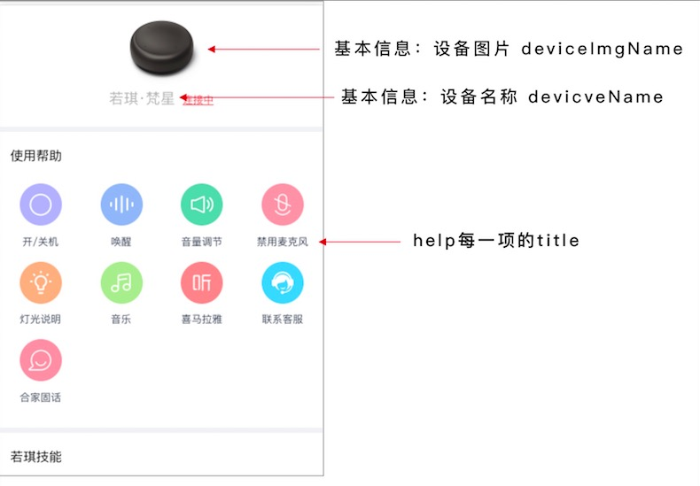
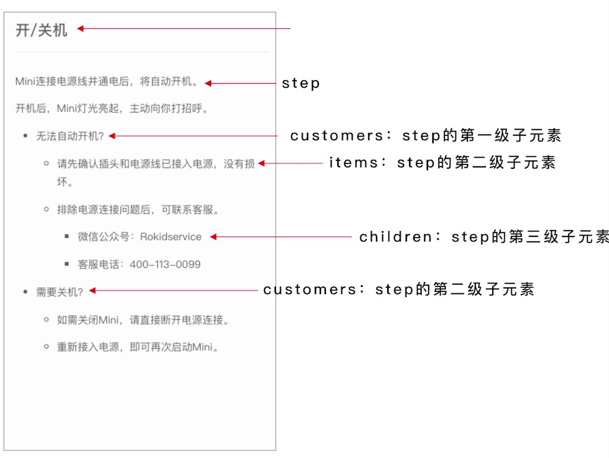
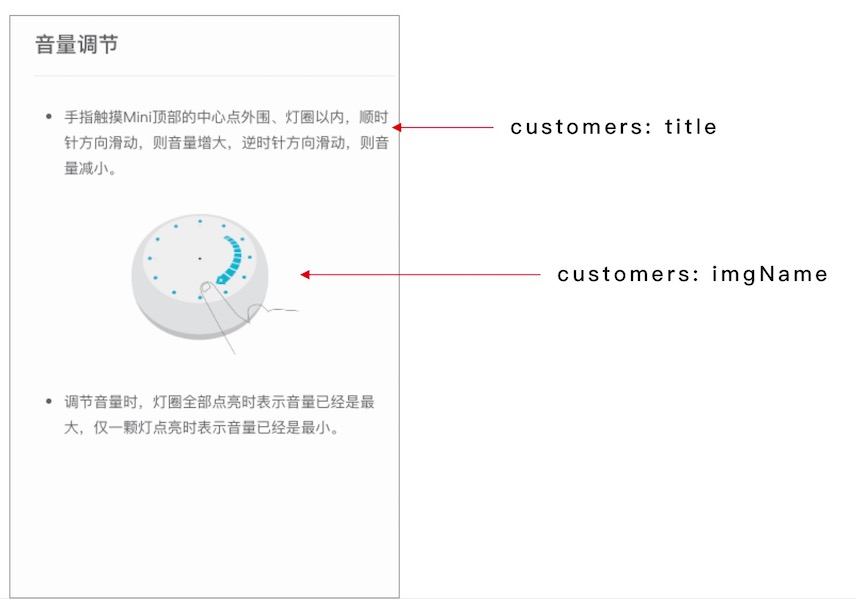

1. 若琪-移动和家亲 H5 接入文档
1.1.1. 介绍：
移动杭研和家亲 H5 页面开发采用的是 vue.js，代码编译使用 npm 和 webpack。
1.1.2. 代码目录结构
apps --- 业务文件
| --- assets --- 静态资源等
| --- | --- pc
| --- | --- h5
| --- components --- 通用组件
| --- | --- pc --- pc组件
| --- | --- h5 --- h5组件
| --- modules --- 页面目录
| --- | --- program1
| --- | --- | --- pc
| --- | --- | --- h5
| --- | --- program2
| --- | --- | --- pc
| --- | --- | --- h5
|
build --- 本地服务、webpack配置文件等
|
dist --- 压缩
|
mock --- 接口数据模拟
|
node_modules --- 第三方包
下面是具体的操作流程
1.1.3. Step1: 下载代码包
代码包地址，新接入的厂商请使用最新版本，以后的新功能也将只支持2.0版本：
下载完成后解压代码到本地
1.1.4. Step2: 安装 npm 包
如果你本地没有安装 node， 请先到 node 官网安装。成功安装 node 之后执行如下命令：
cd rokid-h5
npm install
1.1.5. Step3: 运行本地代码
你可以在本地开发多个项目，代码包中默认会有cmcc/h5相关的页面，如果你想开发多个设备的H5页面，复制 apps/modules/cmcc 文件到 apps/modules 并修改 cmcc 文件夹的名字为对应项目名称[name]即可（文档中的[name]均表示项目名称）。然后执行如下的命令运行本地代码：
npm run dev [name]-h5
该命令会生成一个 http 链接的地址和一个 https 链接的地址，会默认在浏览器中打开 http 链接的页面。
1.1.6. Step4: 修改页面内容
v2.0 版本
新版本中对需要修改的文件做了提取，以配置文件的形式放在 apps/modules/${name}/h5/config 文件夹下
- basic 文件，basic文件中主要管理基本信息，具体字段说明：
deviceName: 设备名称,
deviceImgName: 图片名称，所有的图片都放在对应项目的 img 文件夹下面
- help 文件，所有帮助页面的内容，如果不需要某个帮助页面只要把help文件中对应的那一项删除即可。下面是 help 文件中字段的说明，为了帮助理解，后面会有对应的图文说明。
// 这里我们以开关机这一项来举例，每一项在文件中都有注释说明其对应的帮助页面
startup: {
title: '开/关机',
pageName: '开/关机', // 如果 pageName 与 title 相同则不需要写
steps: [ // 帮助页面一级子元素
{
title: 'Mini连接电源线并通电后，将自动开机。'
},
{
title: '开机后，Mini灯光亮起，主动向你打招呼。 ',
customers: [ // 帮助页面二级子元素
{
title: '无法自动开机？ ',
items: [{ // 帮助页面三级子元素，最多只支持三级
title: '请先确认插头和电源线已接入电源，没有损坏。',
imgName: 'mini.png'
}, {
title: '排除电源连接问题后，可联系客服。',
children: ['微信公众号：Rokidservice', '客服电话：400-113-0099']
}]
},
{
title: '需要关机？',
items: [{
title: '如需关闭Mini，请直接断开电源连接。'
}, {
title: '重新接入电源，即可再次启动Mini。'
}]
}
]
}
]
},
图文描述：   
V1.0版本（新接入的厂商请使用2.0版本）
现在生成的H5页面的内容是针对 若琪-繁星 设备的，因此页面中的部分文案需要做修改：
| 页面 | 修改 | 文件地址 |
|---|---|---|
| 页面名称 | 在 index.html 文件中修改 title 为对应的设备名称 | apps/modules/${name}/h5/index.html |
| 首页 | 修改头部设备图片和设备名称 | apps/modules/${name}/h5/index.html |
| 开/关机 | 页面内的文案 | apps/modules/${name}/h5/components/help/startup.vue |
| 唤醒 | 页面内的文案 | apps/modules/${name}/h5/components/help/wakeup.vue |
| 音量调节 | 页面内的文案 | apps/modules/${name}/h5/components/help/voice.vue |
| 禁用麦克风 | 页面内的文案 | apps/modules/${name}/h5/components/help/microphone.vue |
| 灯光说明 | 页面内的文案 | apps/modules/${name}/h5/components/help/light.vue |
| 音乐 | 页面内的文案 | apps/modules/${name}/h5/components/help/qq.vue |
| 喜马拉雅 | 页面内的文案 | apps/modules/${name}/h5/components/help/xmly.vue |
| 联系客服 | 页面内的文案 | apps/modules/${name}/h5/components/help/service.vue |
1.1.7. Step5: 页面打包上传
H5页面需要打包后上传到移动杭研的系统，本地打包命令：
// 测试环境打包
npm run publish-dev [name]-h5
// 线上打包
npm run publish-online [name]-h5
打包成功后会在 dist/app/[name]/h5 目录下生成：
- index.html: html 文件
- static 文件夹: 存放所有js、css 和 图片
- production.zip: 代码压缩包
打包完成后，将production.zip文件上传到移动杭研系统即可。